Implementa estructuras de datos dinámicas no lineales en la memoria de una computadora a partir del uso de árboles y grafos, su representación y sus posibilidades, así como un lenguaje de programación.
- 4.1 Árboles
- 4.1.1 Representación
- 4.1.2 Formas de uso
- 4.1.3 Implementación
- 4.1.4 Operaciones permitidas
- 4.2 Grafos
- 4.2.1 Representación
- 4.2.2 Formas de uso
- 4.2.3 Implementación
- 4.2.4 Operaciones permitidas
🌳4.1 Árboles
¿Qué es un árbol general?
En el ámbito de la informática, un árbol general es una estructura de datos dinámica no lineal jerárquica, es una colección de elementos finitos que se conocen como nodos, que están conectados por una serie de aristas y los cuales mantienen una relación de parentesco de tipo padre-hijo. Los árboles generales se caracterizan porque hay un único nodo raíz, cada nodo, excepto la raíz, tiene un único padre y hay un único camino (desde la raíz hasta cada nodo). La siguiente figura 1 denota lo que es un árbol general.
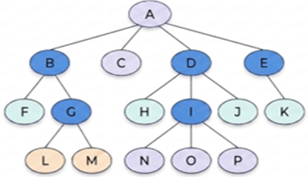
Para comprender el funcionamiento de esta estructura de datos, se requiere primeramente conocer:
- Nodo: Cada unidad básica de información que compone el árbol.
- Nodo Raíz: El primer elemento del árbol general, es el único que no posee antecesores.
- Nodo Hoja: Elemento terminal que no tiene hijos.
- Nodo Interno: Aquel que posee al menos un descendiente o hijo.
- Subárbol: Conjunto de nodos descendientes que parten de un nodo padre específico, ya sea por su rama izquierda o derecha.
- Nivel: Es la longitud del camino desde la raíz hasta un nodo específico. El nivel se incrementa en una unidad por cada ramificación (la raíz comienza en el nivel 0).
- Grado: Se refiere al número de descendientes directos que posee un nodo. El "grado del árbol" es el grado máximo encontrado entre todos sus nodos.
- Altura: Representa el número total de capas o niveles que crecen a partir de la raíz.
La siguiente figura 2 es una representación de los conceptos de un árbol general.
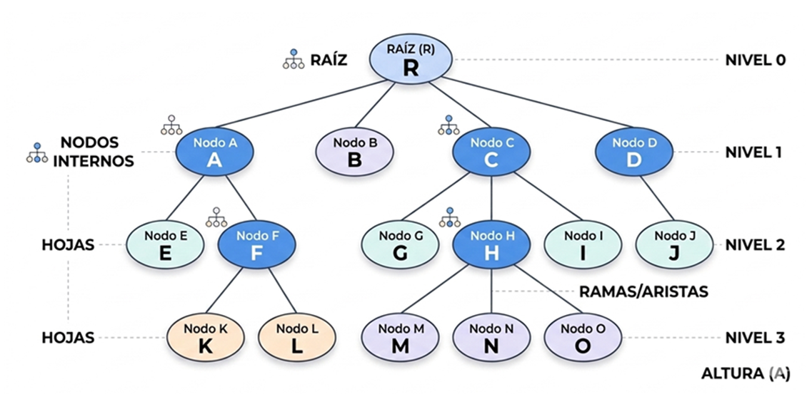
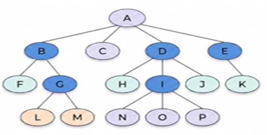
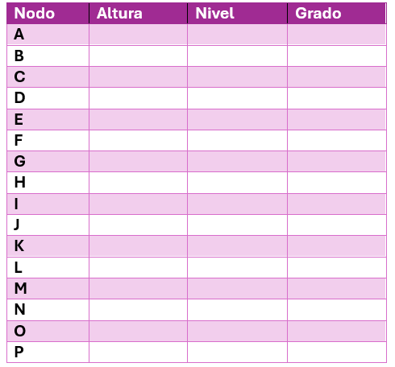
📋 4.1.1 Representación
Este tipo de estructura de datos permite modelar situaciones de la vida real, como el organigrama de una empresa, donde la raíz representa la posición jerárquica más alta (ejemplo el presidente) y de ella se desprenden los distintos niveles de mando, como se muestra en la siguiente figura 3:
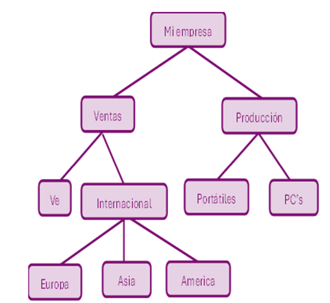
📋 4.1.2 Formas de uso
Los árboles se utilizan para realizar recorridos, estos recorridos se hacen sobre los árboles binarios, se menciona un árbol binario, entonces ¿no es lo mismo un árbol general a un árbol binario? No, porque un árbol binario puede tener como máximo dos hijos descendientes directos, para que quede claro un árbol binario puede tener uno o dos hijos. ¿Cuál es la diferencia entre un árbol general a un árbol binario? Que un árbol general puede tener más de dos hijos y en cambio un árbol binario puede tener uno o dos hijos nada más. Un árbol binario se considera completo o balanceado cuando todos los nodos poseen exactamente dos hijos, excepto aquellos situados en el último nivel (las hojas).
Existen tres formas de recorrer un árbol binario:
- PREorden: prefijo PRE que significa antes de (Raíz – Izquierda – Derecha).
- INorden: prefijo IN que significa dentro de (Izquierda - Raíz – Derecha).
- POSTorden: prefijo POST que significa después de (Izquierda – Derecha – Raíz).
4.1.3 Implementación
La implementación de los árboles se realiza mediante el uso de memoria estática a través de estructuras de arreglos o del uso de la memoria dinámica con las estructuras dinámicas que pueden crecer o decrecer, según la necesidad del programa durante su ejecución. La siguiente figura 4 representa una estructura de un árbol binario (nodo) en memoria dinámica:
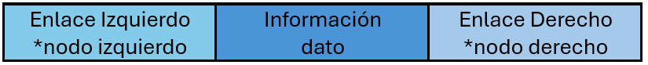
Como se observa, cada nodo se representa como un registro dividido en tres secciones:
- Enlace Izquierdo: Puntero hacia el hijo o subárbol izquierdo.
- Información: El dato o valor almacenado en el nodo.
- Enlace Derecho: Puntero hacia el hijo o subárbol derecho.
Utilizando árboles binarios se pueden representar expresiones matemáticas. Por ejemplo, la expresión (A * B) + (C / D) ^ 35 puede ser visualizada como una estructura donde los operadores son nodos internos y los operandos son nodos hoja. Como se muestra la siguiente figura 5:
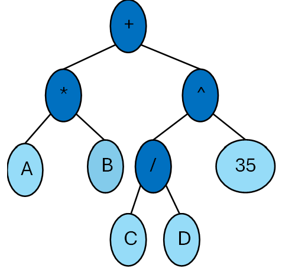
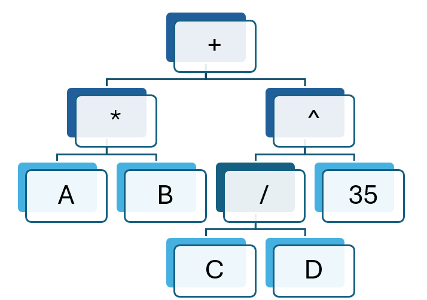
Recorrer un árbol significa visitar cada uno de sus nodos exactamente una vez. En los árboles binarios, existen tres formas:
- INorden (Izquierda(*izqnodo) – Raíz (info) – Derecha (*dernodo))
Se recorre el subárbol izquierdo, se procesa la raíz y finalmente el subárbol derecho. - PREorden (Raíz(info) – Izquierda(*izqnodo) – Derecha (*dernodo))
Se procesa la raíz, se recorre el subárbol izquierdo y por último se recorre el subárbol derecho. - POSTorden (Izquierda(*izqnodo) – Derecha(*dernodo) – Raíz(info))
Se procesan ambos hijos antes de subir a la raíz. Este método es ideal para liberar memoria (borrado de nodos).
A continuación, se demuestra con ejemplos como es el recorrido de los árboles binarios.
a) INorden (Izquierda - Raíz - Derecha)
Comience
Si (t <>) entonces
Inorden *izqnodo
imprima info
inorden *dernodo
sino
fin-si
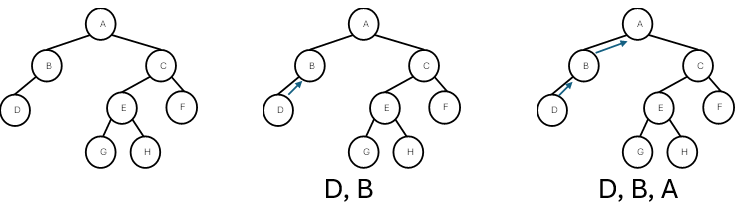
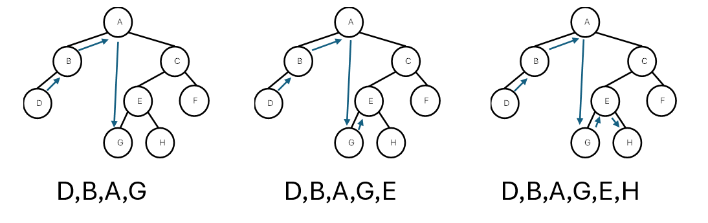
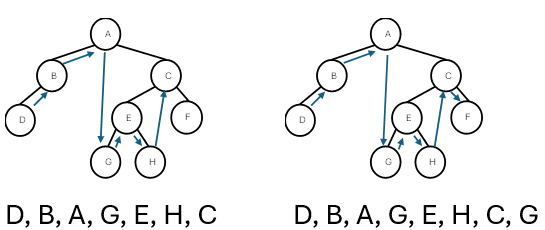
a) Inorden (Izquierda - Raíz - Derecha)
D, B, A, G, E, H, C, F
b) PREorden (Raíz - Izquierda - Derecha)
Comience
Si (t <>) entonces
imprima info
Inorden *izqnodo
inorden *dernodo
sino
fin-si
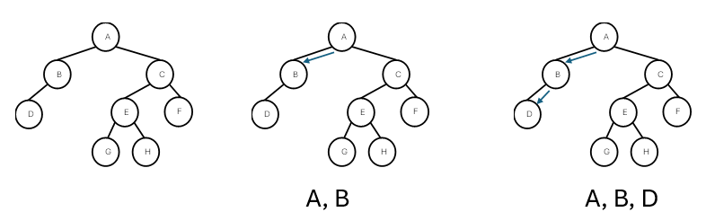
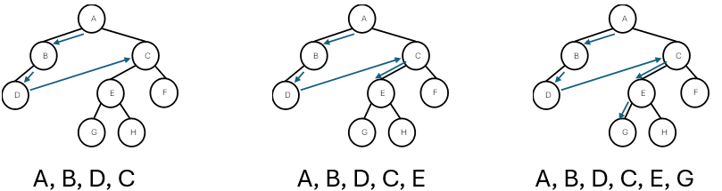
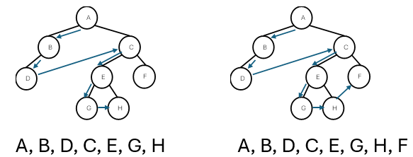
c) POSTorden (Izquierda – Derecha - Raíz)
Comience
Si (t <>) entonces
Inorden *izqnodo
inorden *dernodo
imprima info
sino
fin-si
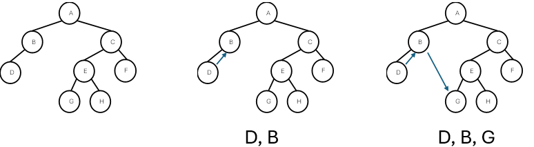
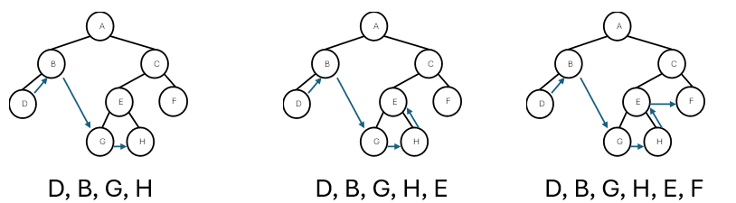
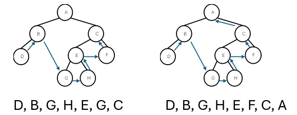
Recorrer el siguiente árbol en las siguientes tres formas:
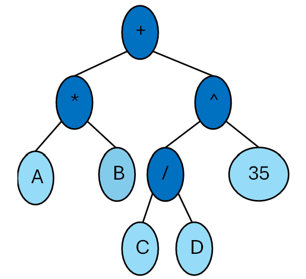
- INorden
- PREorden
- POSTorden
Ejercicio Árbol general
Aplicar las definiciones de un árbol general, de un árbol binario y las formas de uso.
La intención de esta actividad es que el estudiante comprenda los conceptos sobre la estructura de datos dinámica no lineal jerárquica árbol general y binario, así como la aplicación de las formas de uso.
- 1.- Responde las siguientes preguntas
- ¿Qué es un Árbol General?
- ¿Qué es un Árbol Binario?
- ¿Cuál es la diferencia entre un árbol general y un binario?
- ¿Cuáles son las tres formas de recorrer un árbol?
- 2.- Llenar la siguiente tabla considerando el árbol siguiente
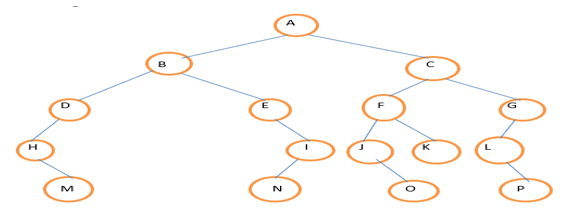
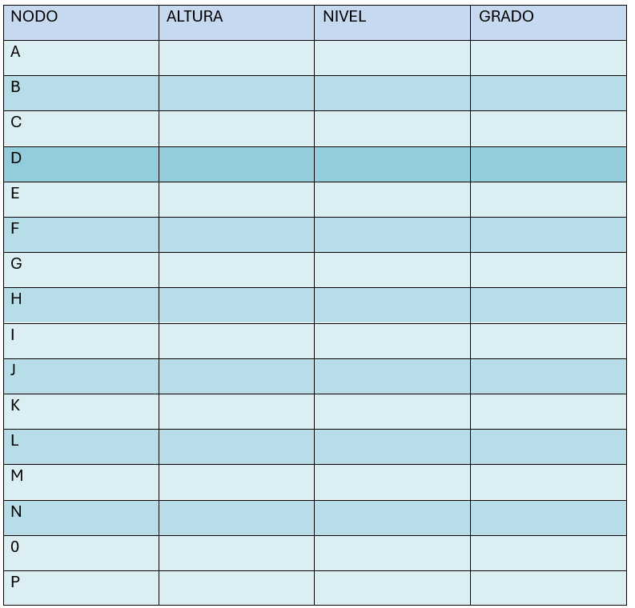
- 3.- Recorrer el anterior árbol en las siguientes tres formas:
- Inorden
- Preorden
- Postorden
- 4.- ¿Cómo es la representación de memoria de una estructura dinámica?
- 5.- ¿Cómo se declara un árbol?
- 6.- ¿Qué es un apuntador o un puntero?
4.1.4 Operaciones permitidas
Las operaciones (funciones) que se realizan sobre los árboles binarios son las siguientes:
- Insertar un nodo nuevo al árbol (void insertanodonuevo (ARBOL *, int);) Asignación de valores nuevos en el nodo nuevo.
- Recorrer el árbol en Inorden (void inorden (ARBOL)) Función que identifica el recorrido en inorden.
- Recorrer el árbol en Preorden (void preorden (ARBOL)) Función que identifica el recorrido en preorden.
- Recorrer el árbol en Postorden (void postorden (ARBOL)) Función que identifica el recorrido en postorden.
- Eliminar un nodo al árbol (void treefree (ARBOL)) Esta función permite eliminar primero los nodos hijo del subarbol (izquierdo o derecho) y luego la raíz, de esta forma se elimina el árbol de abajo hacia arriba (de los hijos a la raíz).
📝 Actividad UTIV_A1 Programa recorridos_árbol_binario:
1 .- un lenguaje de programación para declarar la estructura dinámica de un árbol binario.
2 .-La intención de esta actividad es que el estudiante comprenda las funciones que se realizan sobre los árboles binarios, para este caso es el de mandar a llamar las funciones (void):
- void insertanodonuevo (ARBOL *, int);
- void inorden (ARBOL)
- void preorden (ARBOL)
- void postorden (ARBOL)
- void treefree (ARBOL)
- 1.- Declara el árbol binario como se muestra a continuación con un struct
node
Struct nodoarbo{
struct nodoarbol *izqnodo;
int info;
struct nodoarbol *dernodo;
};
typedef struct nodoarbol NODO;
typedef NODO *ARBOL; - a- La forma de asignar valores al árbol binario será a través del llamado de la función void insertanodonuevo (ARBOL *, int)
- b- Para recorrer el árbol binario será de las tres formas llamando las
funciones (void)
respectivamente:
- void inorden (ARBOL)
- void preorden (ARBOL)
- void postorden (ARBOL)
- c- Por último, para liberar el espacio de memoria se tiene que llamar la función void treefree (ARBOL).
- a) Programa fuente, el nombre de este programa debe de contener las iniciales de su nombre y el nombre del programa, por ejemplo, RBV_Programa_Recorridos_Arbol_Binario.
- b) Programa executable.
- c) Corrida del programa, en un archivo PDF.
Transformación de un árbol general a un árbol binario
¿Se pueden realizar los tres recorridos INorden, PREorden y POSTorden a un árbol general? No, no se pueden recorrer de las tres formas a un árbol general, porque, por ejemplo, si hay un nodo padre que tiene tres nodos hijos, como se vio en el tema anterior, los recorridos se realizan nada más sobre dos nodos hijos el subárbol izquierdo y el subárbol derecho no hay un tercer nodo hijo, por lo tanto, no se puede. Si se desea realizar un recorrido a un árbol general ¿Qué es lo que se tiene que hacer? Lo primero que se tiene que realizar es transformar el árbol general a un árbol binario, aplicando los siguientes pasos:
- Enlazar los hijos de cada nodo en forma horizontal (los hermanos).
- Enlazar en forma vertical el nodo padre con el nodo hijo que se encuentra más a la izquierda.
- Rotar el diagrama resultante aproximadamente 45 grados hacia la izquierda, y así se obtendrá el árbol binario correspondiente.
Convertir el siguiente árbol general a un árbol binario, y después recorrerlo en las tres formas (Preorden, Inorden y Postorden)
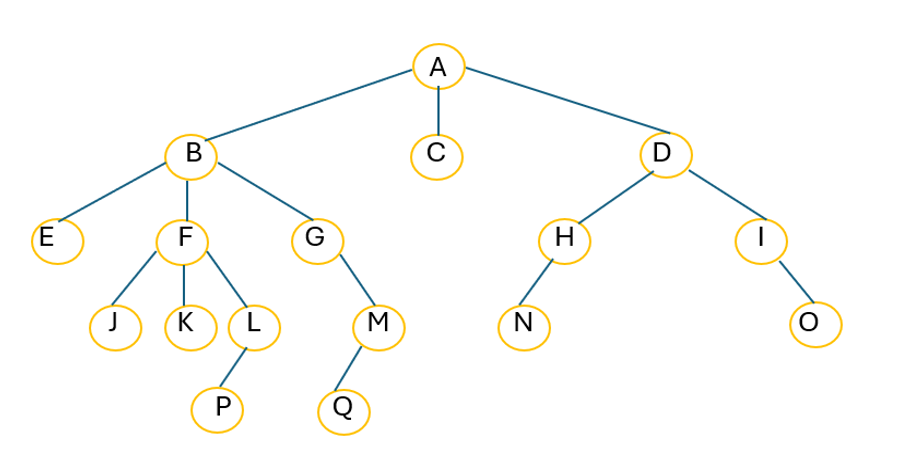
Ejercicio Transformación de árbol general a binario
Aplicar los pasos para transformar un árbol general a un árbol binario para recorrerlo en las siguientes formas: INorden, PREorden y POSTorden. Posteriormente utilizar un lenguaje de programación para declarar la estructura dinámica de un árbol binario para recorrerlo. La intención de esta actividad es que el estudiante comprenda las aplicaciones que se realizan sobre un árbol general al convertirlo en un árbol binario para que se pueda recorrer.
Contesta las siguientes preguntas:
- 1-¿Cuáles son los pasos para transformar un árbol general a un árbol binario?
- 2-Se tiene el siguiente árbol general:
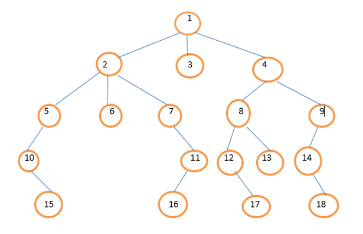
- a) Aplicando los dos primeros pasos para transformar un árbol general a un árbol binario ¿Cómo quedaría el árbol?
- b)Aplicando el tercer paso ¿Cómo quedaría el árbol?
- c)¿Cómo quedaría el árbol binario si lo recorres en PREorden?
- d)¿Cómo quedaría el árbol binario si lo recorres en INorden?
- e)¿Cómo quedaría el árbol binario si lo recorres en POSTorden?
- 4-Con código ¿Cómo quedaría el árbol anterior si lo recorres en PREorden?
- 5-Con código ¿Cómo quedaría el árbol anterior si lo recorres en INorden?
- 6-Con código ¿Cómo quedaría el árbol anterior si lo recorres en POSTorden?
- Declara el árbol binario como se muestra
a continuación con un struct node:
Struct nodoarbo{
struct nodoarbol *izqnodo;
int info;
struct nodoarbol *dernodo;
};
typedef struct nodoarbol NODO;
typedef NODO *ARBOL; - a)La forma de asignar valores al árbol binario será a través del llamado de la función void insertanodonuevo (ARBOL *, int ) void postorden (ARBOL).
- b)Para recorrer el árbol binario será de las tres formas llamando las funciones (void) respectivamente: void inorden (ARBOL), void preorden (ARBOL), void postorden (ARBOL).
- c)Por último, para liberar el espacio de memoria se tiene que llamar la función void treefree (ARBOL).
📊4.2 Grafos
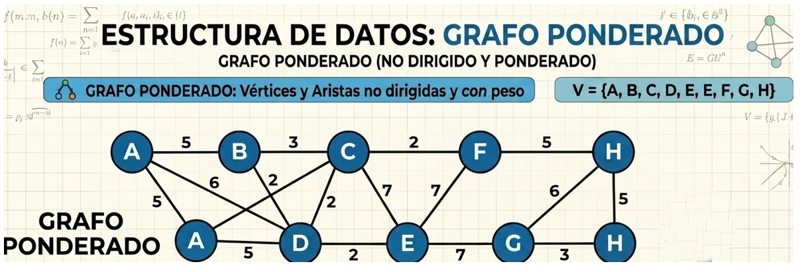
Apoyándote de la anterior figura 6, podrías definir ¿Qué es un grafo? Claro, un grafo es una estructura de datos dinámica no lineal, que consta de un conjunto de nodos (vértices) y un conjunto de aristas (arcos). Entonces ¿Cuál es la diferencia entre las estructuras lineales como las listas simples o arreglos, a las no lineales como son los grafos? Que los grafos permiten representar relaciones complejas donde cada nodo puede conectarse con múltiples nodos, como se muestra en la figura 6 donde un nodo padre puede tener varios nodos hijos y los nodos hijos pueden tener varios nodos padres(relación de M:N).
La siguiente figura 7 nos servirá de apoyo para comprender los conceptos y el funcionamiento de la estructura de datos dinámica no lineales grafos:
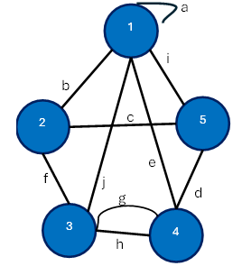
Como se observa la figura 7 un grafo consta de tres elementos básicos que son:
- Vértices o Nodos: Es el conjunto finito de nodos u objetos que representan la información, por ejemplo, de la figura el conjunto de vértices es V = {1,2,3,4,5}.
- Aristas o Arcos: Es el conjunto finito de líneas o arcos que representan las relaciones entre los vértices, por ejemplo, de la figura el conjunto de aristas es A ={a,b,c,d,e,f,g,h,i,j}.
- Relación de Incidencia: La función que asocia a cada arista con un par de vértices, de la figura sería el caso de la arista ‘a’ que incide doble vez con el nodo 1.
Para comprender mejor este tipo de estructura, es necesario conocer los siguientes conceptos:
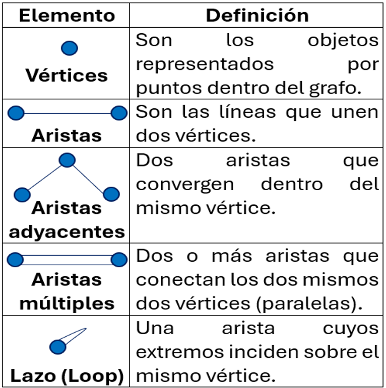
- Grado o Valencia de un grafo: Es el número de aristas que inciden sobre el vértice o nodo. Es fundamental considerar que un lazo cuenta como dos aristas, un ejemplo es el caso de la incidencia de la arista ‘a’ del nodo 1 del grafo de la figura 7, se cuenta como doble, por lo que el grado del nodo 1 es de 6, G (1) =6, G (2) = 3, G (3) =4, G (4) =4 y G (5) =3.
- Grafo completo o fuerte: Se considera un grafo completo si cada vértice tiene un grado
igual a n-1 (donde n es el número total de vértices). Esto implica que cada nodo está conectado con
todos los demás. Con un solo nodo que no esté conectado con todos los demás se considera un grafo no
completo o débil.
Haciendo referencia al grafo de la figura 7 ¿Es un grafo completo o débil? Si ¿por qué? No ¿por qué? No, porque el grado del nodo 5 es de 3 y debe ser de 4 por lo de n-1 (5-1=4), esto lo hace un grafo no completo o débil. - Grafos Dirigidos (Digrafos) vs. No Dirigidos
- Dirigidos: Las aristas tienen un sentido definido (flechas). Si hay una arista de ‘u’ a ‘v’, no necesariamente existe una de ‘v’ a ‘u’, esto que quiere decir que puedo ir de ‘u’ a ‘v’, pero no puede ir de ‘v’ a ‘u’ como se muestra en la siguiente figura 8:
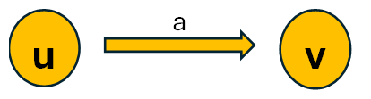
- No Dirigidos: La relación es simétrica. Si hay una arista de ‘u’ a ‘v’, y de ‘v’ a ‘u’, esto que quiere decir que puedo ir de ‘u’ a ‘v’, y de ‘v’ a ‘u’ como se muestra en la siguiente figura 9:
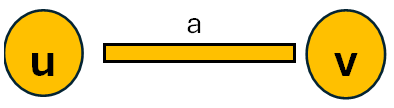
Caminos y Recorridos: Un camino simple es una secuencia de vértices donde no se repite ningún nodo. Por ejemplo, haciendo referencia a la figura 7 que es un grafo no dirigido, los cinco posibles caminos simples serían:
- 1-2(b), 2-4(f), 4-5(i), 5-3(g)
- 3-5(g), 5-4(i), 4-2(f), 2-1(b)
- 1-3(c), 3-2(j), 2-4(f), 4-5(i)
- 1-4(e), 4-5(i), 5-3(g), 3-2(j)
- 1-5(d), 5-3(g), 3-2(j), 2-4(f)
📋 4.2.1 Representación
Existen dos formas para representar un grafo en memoria de una computadora que son:
- Estática: Matriz de Adyacencia Una matriz se identifica como una estructura de datos
arreglo bidimensional y se conoce comúnmente como una tabla bidimensional, donde se van a almacenar las
relaciones que existen entre los vértices o nodos, la manera de identificar si hay una relación entre
los vértices es con el número 1 y la ausencia se representa con el 0. Además, se requiere de una
estructura de datos arreglo unidimensional vector para almacenar los vértices o nodos.
Para entender con mayor claridad lo anterior, tomaremos de referencia a la siguiente figura 8:
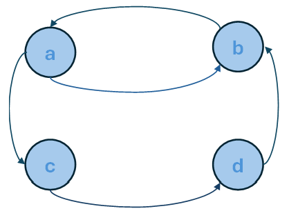
Como se observa es un grafo dirigido, eso quiere decir que podemos ir del nodo ‘a’ al nodo ‘c’ y al nodo‘b’; del nodo ‘b’ al nodo ‘a’; del nodo ‘c’ al nodo ‘d’ y del ‘d’ al nodo ‘b’.
Los vertices quedarían representado con un Vector_Vertice[4]={‘a’, ‘b’, ‘c’, d’} con sus respectivos índices (0,1,2,3) como se muestra la siguiente figura 9:
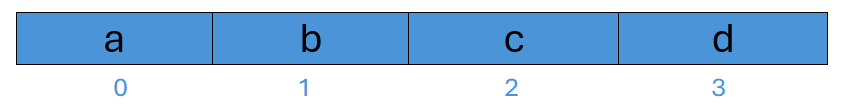
La matriz de adyacencia quedaría declarada de la siguiente forma Matriz_Adyacencia[4][4]={‘0’, ‘1’, ‘1’,’0’, ‘1’, ‘0’, ‘0’,’0’, ‘0’, ‘0’, ‘0’, ‘1’,’0’, ‘1’, ‘0’, ‘0’}. A continuación se muestra la figura 10 de como quedaría la Matriz_Adyacencia:
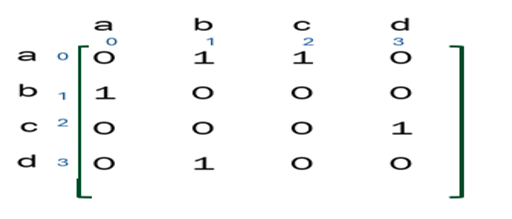
📝 Actividad UTIV_A2 Grafo_Matriz_adyacencia
1 .-Aplicar las definiciones de un grafo, las formas de uso y utilizar un lenguaje de programación para declarar una Matriz_Adyacencia[6][6] y un Vector_Vertices[6] para programar un grafo y hacer uso de la pantalla a través del goto xy().
- 1.- Responde las siguientes preguntas
- ¿Qué es un Grafo?
- ¿Qué es un Grafo dirigido?
- 2.- Se tiene el siguiente grafo y contesta los siguientes incisos
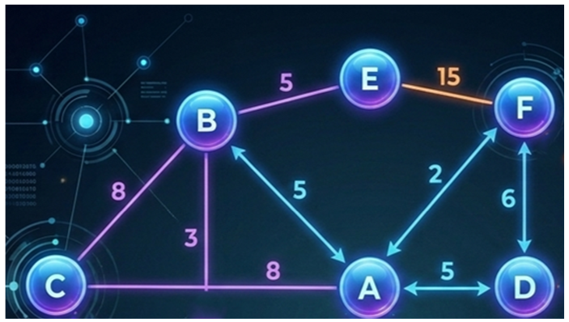
- a.Conjunto de Nodos o Vértices
- b.Conjunto de Aristas o Arcos
- c.Grado o Valencia de los Vértices
- d.Es un grafo completo o fuerte si por qué, no por qué (justificar su respuesta)
- e.Cinco posibles caminos simples
- 3.- Qué es un lazo y da un ejemplo de la vida real
- 4.- Qué es un circuito o camino cerrado
- 5.- Declara una Matriz_Adyacencia[6][6] de tipo char, asígnale los valores de la figura del grafo de este ejercicio, también declara un vector Vector_Vertice[6] de tipo char de tamaño 6 y asígnale los valores del grafo de este ejercicio.
- 6.- Declarar la siguiente función
void gotoxy(int x,int y){
HANDLE hcon;
hcon = GetStdHandle(STD_OUTPUT_HANDLE);
}
Esta función va a permitir utilizar la pantalla de la computadora con el gotoxy() y poder dibujar el grafo utilizando el Vector_Vertice[6] y la Matriz_Adyacencia[6][6].
- a) Programa fuente, el nombre de este programa debe de contener las iniciales de su nombre y el nombre del programa, por ejemplo, RBV_Programa_Matriz_Adyacencia.
- b) Programa executable.
- c) Corrida del programa, en un archivo PDF.
Otra forma para representar un grafo en la memoria de una computadora es:
- Dinámica: Lista de Adyacencia en este tipo de estructura de datos los nodos o vértices forman una lista ordenada, que se puede representar mediante un arreglo, cada uno de los nodos apunta a una lista (enlazada) que contiene los nodos con los que está relacionado por las aristas o arcos. Una ventaja de este tipo de estructura de datos es el espacio eficiente de almacenamiento porque solo ocupa memoria para las aristas reales del grafo. La desventaja que presenta es el tiempo de búsqueda de las aristas, porque recorre cada uno de los nodos de la lista enlazada de forma secuencial.
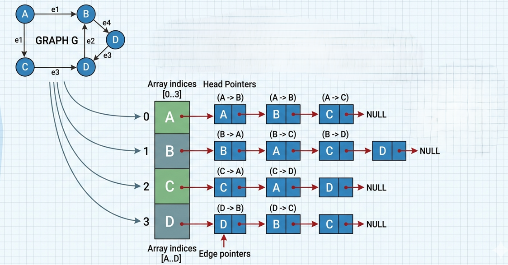
Haciendo referencia a la figura 12, la representación mediante un arreglo quedaría de la siguiente forma:
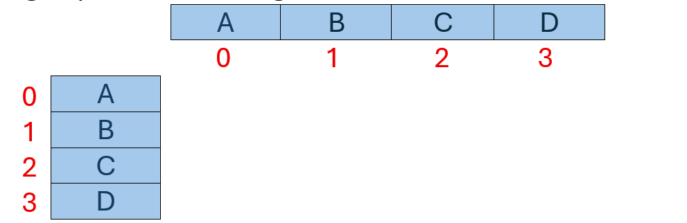
La lista doblemente enlazada en orden alfabético de forma ascendente quedaría de la siguiente figura 13:
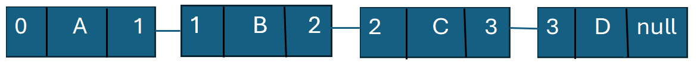
Ejercicio Lista_Adyacencia
Aplicar las definiciones de una lista de adyacencia y las formas de uso.
La intención de esta actividad es que el estudiante comprenda los conceptos sobre la estructura de datos dinámica no lineal lista de adyacencia.
- 1.- Responde las siguientes preguntas:
- ¿Qué es una lista de adyacencia?
- ¿Qué estructura de datos se utiliza para representar una lista de adyacencia?
- 2.- Se tiene el siguiente ejercicio:
El polideportivo “Mente Sana” tiene veinte instalaciones deportivas, de las cuales quince están ocupadas. Realiza una lista de adyacencia y un diagrama esquemático que represente el estado de las instalaciones y permita en cualquier momento obtener un listado en orden alfabético de las instalaciones. El orden en que aparece la información es por el número y el nombre de la instalación: 1 Alberca, 2 Tenis, 3 vacía, 4 basquetbol, 5 futbol, 6 voleibol, 7 vacía, 8 vacía, 9 gimnasio, 10 canal de remo, 11 piragüismo, 12 estación de esquí, 13 circuito de bicicletas, 14 campo de tiro, 15 vacía, 16 hípica, 17 vacía, 18 golf, 19 rugby y 20 hockey.
📋 4.2.2 Formas de uso
Los grafos se utilizan para varias aplicaciones, una de ellas es el análisis de caminos que permite determinar la conectividad y accesibilidad dentro de una red. Un claro ejemplo de la aplicación de un grafo en la vida diaria son las redes sociales como Facebook, los nodos representan a las personas y las aristas representan sus conexiones. Un grafo dirigido podría estar representado con Xtwitter o Instagram porque el nodo A sigue al nodo B, pero eso no significa que el nodo B siga al nodo A. Una de las implementaciones de los grafos es el tiempo real de la ruta más optima usando el algoritmo de Dijkstra. También las aplicaciones que usan un sistema de navegación y mapas como es el caso de los GPS.
📋 4.2.3 implementación
Una de las formas para poner en marcha un grafo, es implementando un algoritmo para recorrerlo y encontrar el camino más corto, como es el caso del algoritmo Dijkstra. Otra forma de implementar un grafo es utilizando un lenguaje de programación de manera estática con una matriz de adyacencia y de forma dinámica una lista de adyacencia, esta es más eficiente porque ahorra memoria cuando son grafos muy grandes. Estas formas ya se vieron en el punto 4.2.1 Representación. Para la planificación de entregas de productos, se utilizan los grafos, ya que permiten entregar el producto correcto, en la cantidad exacta, en el lugar adecuado, en el momento oportuno y al menor costo posible.
📋 4.2.4 Operaciones permitidas
Las operaciones que se pueden hacer sobre un grafo son:
- 🛣️ Encontrar el camino más corto entre nodos (ej. Dijkstra).
- 🌐 Recorrer el grafo nivel por nivel.
- 🌳 Búsqueda en profundidad: Explorar cada rama antes de retroceder.
- ➕ Insertar nodo: Agregar un nuevo nodo al grafo.
- 🔗 Insertar arista: Crear una conexión entre nodos.
- ❌ Eliminar nodo: Borrar un nodo del grafo.
- ✂️ Eliminar arista: Eliminar una conexión existente.